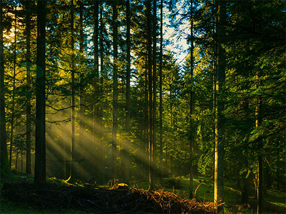
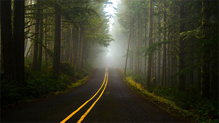
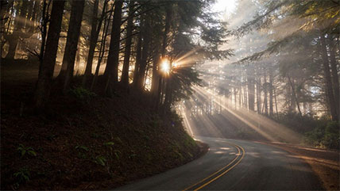

Tourism
красота
природы
Тури́зм — выезды (путешествия) посетителей в другую страну или местность, отличную от места постоянного жительства, с любой целью, кроме трудоустройства. Человека, совершающего такое путешествие, называют «туристом», «путешественником», «посетителем».
Виды
Туризм – совмещение отдыха и познания нового.



Туризм.
Польза туризма научно доказана. С помощью 29 проведенных исследований китайских ученых, было доказано, что любая турпоездка снижает уровень стресса, увеличивает продуктивность, улучшает иммунитет и сон. А психологи из Университета Рочестера подтвердили — путешествия на природу делают человека счастливее.